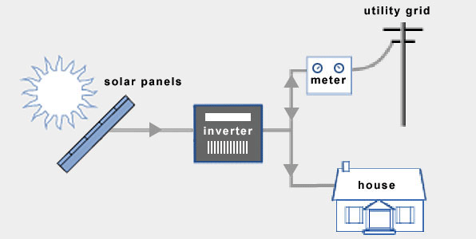
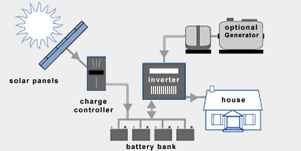
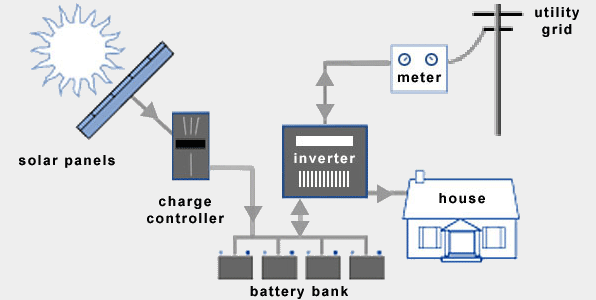

Solar panels produce electricity by transforming the continuous flow of energy from the sun to electricity. No harmful emissions are released into the air when electricity is produced by solar panels. The photovoltaic process that transforms sunlight into electricity doesn’t require any fuel and has no variable costs.
The sun provides more than enough energy to meet the whole world’s energy needs, and unlike fossil fuels, it won’t run out anytime soon. As a renewable energy source, the only limitation of solar power is our ability to turn it into electricity in an efficient and cost-effective way. No greenhouse gas emissions are released into the atmosphere when you use solar panels to create electricity. And because the sun provides more energy than we’ll ever need, electricity from solar power is a very important energy source in the move to clean energy production.
After solar panels have been installed, operational costs are quite low compared to other forms of power generation. Fuel isn’t required, and this means that solar power can create large amounts of electricity without the uncertainty and expense of securing a fuel supply.
The main advantage is that it is a renewable, clean source of electricity. Solar power is also scalable. This means that it can be deployed on an industrial scale, or it can be used to power a single household. When it’s used on a small scale, extra electricity can be stored in a battery or fed back into the electricity grid. Overall, the sun gives off far more energy than we’ll ever need. The only limitation is our ability to convert it to electricity in a cost-effective way.
Grid-tied, on-grid, utility-interactive, grid intertie and grid backfeeding are all terms used to describe the same concept – a solar system that is connected to the utility power grid.

1. It save more money with net metering
A grid-connection will allow you to save more money with solar panels through better efficiency rates, net metering, plus lower equipment and installation costs: Batteries, and other
stand-alone equipment, are required for a fully functional off-grid solar system and add to costs as well as maintenance. Grid-tied solar systems are therefore generally cheaper and simpler to install.
Your solar panels will often generate more electricity than what you are capable of consuming. With net metering, homeowners can put this excess electricity onto the utility grid instead of storing it themselves with batteries. Net metering (or feed-in tariff schemes in some countries) play an important role in how solar power is incentivized. Without it, residential solar systems would be much less feasible from a financial point of view. Many utility companies are committed to buying electricity from homeowners at the same rate as they sell it themselves.
2. The utility grid is a virtual battery
Electricity has to be spent in real time. However, it can be temporarily stored as other forms of energy (e.g. chemical energy in batteries). Energy storage typically comes with
significant losses. The electric power grid is in many ways also a battery, without the need for maintenance or replacements, and with much better efficiency rates. In other words, more electricity (and more money) goes to waste
with conventional battery systems. Additional perks of being grid-tied include access to backup power from the utility grid (in case your solar system stop generating electricity for one reason or another). At the same time you
help to mitigate the utility company`s peak load. As a result, the efficiency of our electrical system as a whole goes up.
An off-grid solar system (off-the-grid, standalone) is the obvious alternative to one that is grid-tied. For homeowners that have access to the grid, off-grid solar systems are usually out of question. Here`s why: To ensure access to electricity at all times, off-grid solar systems require battery storage and a backup generator (if you live off-the-grid). On top of this, a battery bank typically needs to be replaced after 10 years. Batteries are complicated, expensive and decrease overall system efficiency.

1. No access to the utility grid
Off-grid solar systems can be cheaper than extending power lines in certain remote areas. Consider off-gird if you’re more than 100 yards from the grid. The costs of overhead transmission
lines range from $174,000 per mile (for rural construction) to $11,000,000 per mile (for urban construction).
2. Become energy self-sufficient
Living off the grid and being self-sufficient feels good. For some people, this feeling feeling is worth more than saving money. Energy self-sufficiency is also a form of security. Power
failures on the utility grid do not affect off-grid solar systems. On the flip side, batteries can only store a certain amount of energy, and during cloudy times, being connected to the grid is actually where the security is. You
should install a backup generator to be prepared for these kinds of situations.
Solar charge controllers are also known as charge regulators or just battery regulators. The last term is probably the best to describe what this device actually does: Solar battery chargers limit the rate of current being delivered to the battery bank and protect the batteries from overcharging. Good charge controllers are crucial for keeping the batteries healthy, which ensures the lifetime of a battery bank is maximized. If you have a battery-based inverter, chances are that the charge controller is integrated.
Without a battery bank (or a generator) it’ll be lights out by sunset. A battery bank is essentially a group of batteries wired together.
AC and DC safety disconnects are required for all solar systems. For off-grid solar systems, one additional DC disconnect is installed between the battery bank and the off-grid inverter. It is used to switch off the current flowing between these components. This is important for maintenance, troubleshooting and protection against electrical fires.
There’s no need for an inverter if you`re only setting up solar panels for your boat, your RV, or something else that runs on DC current. You will need an inverter to convert DC to AC for all other electrical appliances. Off-grid inverters do not have to match phase with the utility sine wave as opposed to grid-tie inverters. Electrical current flows from the solar panels through the solar charge controller and the bank battery bank before it is finally converted into AC by the off-grid-inverter.
It takes a lot of money and big batteries to prepare for several consecutive days without the sun shining (or access to the grid). This is where backup generators come in. In most cases, installing a backup generator that runs on diesel is a better choice than investing in an oversized battery bank that seldom gets to operate at it`s full potential. Generators can run on propane, petroleum, gasoline and many other fuel types. Backup generators typically output AC, which can be sent through the inverter for direct use, or it can be converted into DC for battery storage.
Hybrid solar systems combines the best from grid-tied and off-grid solar systems. These systems can either be described as off-grid solar with utility backup power, or grid-tied solar with extra battery storage.

1. Less expensive than off-gird solar systems
Hybrid solar systems are less expensive than off-grid solar systems. You don’t really need a backup generator, and the capacity of your battery bank can be downsized. Off-peak
electricity from the utility company is cheaper than diesel.
2. Smart solar holds a lot of promise
The introduction of hybrid solar systems has opened up for many interesting innovations. New inverters let homeowners take advantage of changes in the utility electricity rates throughout
the day.
Solar panels happen to output the most electrical power at noon – not long before the price of electricity peaks. Your home and electrical vehicle can be programmed to consume power during off-peak hours (or from
your solar panels). Consequently you can temporarily store whatever excess electricity your solar panels in batteries, and put it on the utility grid when you are paid the most for every kWh.
Hybrid solar systems utilize battery-based grid-tie inverters. These devices combine can draw electrical power to and from battery banks, as well as synchronize with the utility grid.